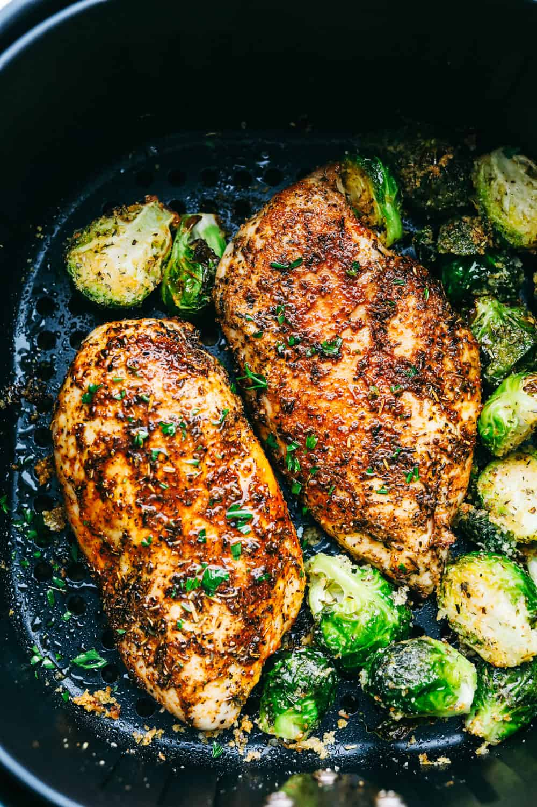

airfryer-chicken

Description
Airfryers have changed cooking. This is such a healthy way to cook chicken or any other
dish for that matter.
Ingredients
- Chicken Breasts: Buying skinless, boneless make it super easy.
- Olive Oil: Perfect mild flavored oil for the air fryer
- Italian Seasoning: Perfect combination of spices
- Garlic Powder: Garlic adds that nice kick of flavor
- Paprika: Adds color and flavor
- Salt and Pepper: Add to taste
- Optional: Brussel sprouts
Steps
- Place the chicken in the fryer and rub with the olive oil to coat
- In a small bowl combine the spices and rub generously on the chicken
- Bake at 360 for 9 min
- Flip (add brussel sprouts if using) Cook for another 9 min